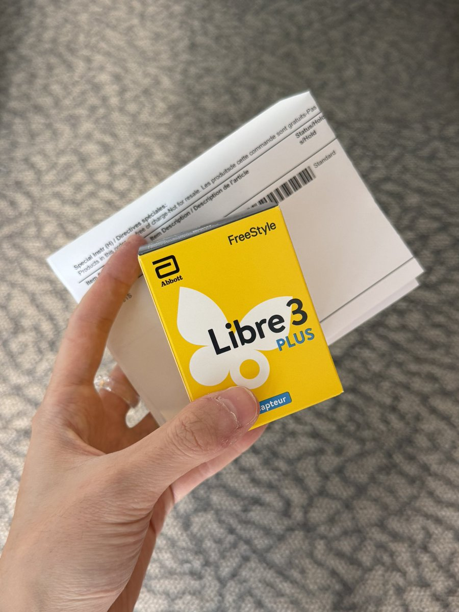

amber
@amber_medusozoa
@PowehiChan01 早在更早的时候我就发过，这个Freestyle Libre 3就是可以免费申领的，我说是买的确实不准确所以你误解我觉得情有可原。但谁会想到会有人为了把人当罪犯地审一个字一个字地看这人都发过什么推

𝒂𝒎𝒃𝒆𝒓🏳️⚧️
@amber_digit2
你们加拿大好厉害 居然还有免费送动态血糖仪的服务 https://t.co/pTH6YtM5a0
猫头毛豆鹰
@PowehiChan01
@amber_medusozoa 显然在此之前没有人知道这些花费的内情，既然一切都情有可原那我向安老师道歉。
但「买这个血糖仪…判断不出来」可是安老师在6/8/2026所说，现在又说是「免费申领」。这可就不那么情有可原了。